In UML, the main information is represented in graphical diagrams. However, it is not always possible to represent graphically the whole semantic of UML, not talking of all the cosmetic properties. For example, it is pretty easy to represent and to edit a Class’ name graphically. While we still can represent the “is abstract” property graphically (By using the italic font for the Class’ name), it is harder to edit this property directly from the diagram. Worse, the “is leaf” property doesn’t even have a graphical representation. Thus, we often need a different view for representing all the properties of a UML Element, without polluting the graphical view.
As UML is highly extensible, through the mean of Profiles, it is also important to be able to represent and edit the profile’s properties, without managing everything from the diagram view.
Eclipse provides a standard view for these properties: the Properties Page. This view is a table representing all the properties available for the selected Element, including the ones that cannot be represented or edited graphically. This view is pretty useful, but is neither really user-friendly nor optimal, as it may require up to four clicks to simply edit a comment’s body. Moreover, it can only be extended via Java code, which requires some technical skills and prevents a dynamic modification of the view, as the Java code needs to be recompiled after each modification.
There is an extension of the base Property View framework, still in the standard Eclipse implementation, which fixes some of these problems. It is called the “Eclipse Tabbed Properties View” framework. It provides a better look and feel for the property view, with more flexibility, and a better usability. However, it keeps being difficult to customize, as it still hard-coded in Java.
Papyrus provides its own Property View framework, based on the Tabbed Property View framework. The Papyrus Property View can be extended in two ways:
This document aims at detailing all the features related to the property view customization, both dynamically and statically.
Most customizations can be done through the Property view customization Editor. It provides native support for EMF Models, UML models and profiles. It also provides a set of basic widgets and property editors.
Each property view configuration is defined in a different set of files. Each configuration can contain elements from different contexts, but we typically have one configuration per Ecore Metamodel or UML Profile (i.e. one configuration for UML, one for the Diagram Appearance tab, another one for the SysML profile…)
To see the list of available configurations, open the properties view (Window -> Show View -> Other… -> General/Properties). Click on the white arrow in the upper right corner of the Properties view, and select “Customize property view”. You should see a dialog with the list of all available configurations.
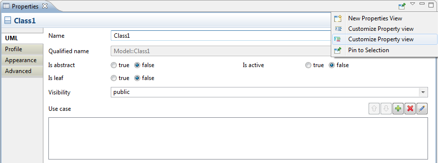
As the standard configurations are read-only, you cannot edit them directly. You will first need to make a copy of the configuration. You will then be able to edit the copy.
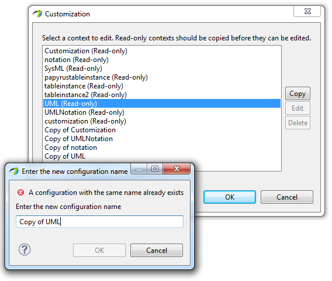
The Property View Editor has three panes:
The Editor presents the elements defined by this configuration. The Preview displays an overview of the selected View, as it will be displayed in the property view at runtime. The properties view displays the properties of the selected element
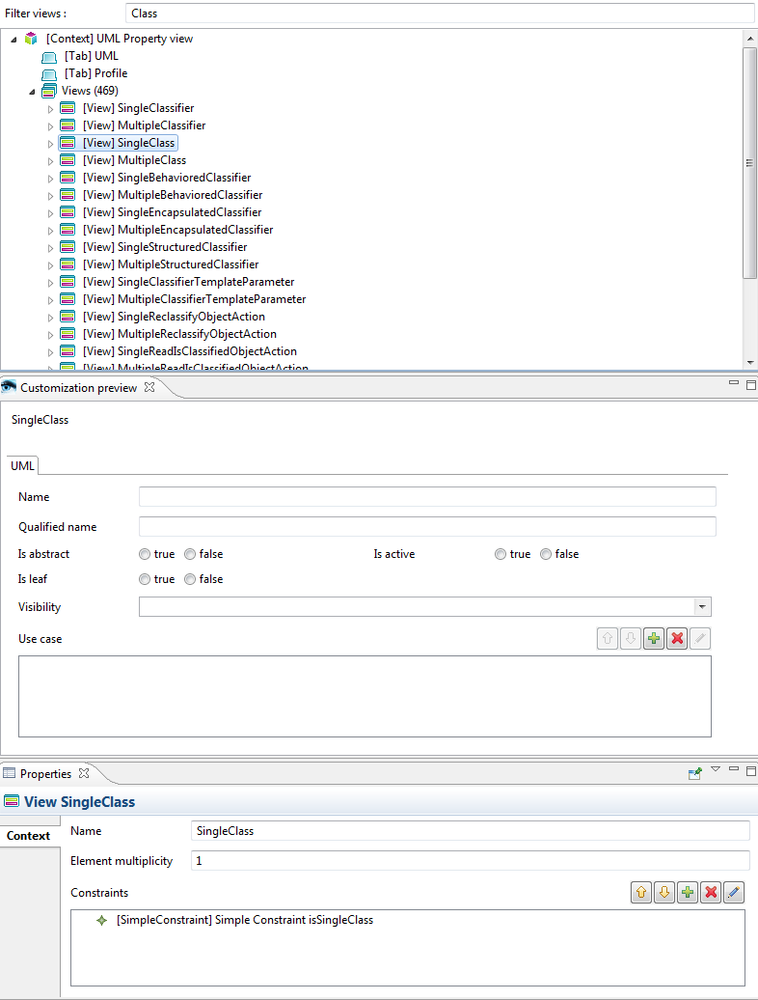
The editor contains a Tree, containing the following elements :
The Tree allows reordering or removing easily the elements (Through drag & drop, delete). The editor also supports the Undo/Redo commands.
The preview displays a real-time overview of the selected View. However, some widgets can only be computed at runtime, which prevents a pertinent preview. This is the case of the “Enum Radio” widget, for example, as the enumerated values are only known at runtime.
The property view is used to edit the properties of the element selected in the tree. The property view uses the Papyrus Property View framework, thus can be customized just the same way you would customize any other property view.
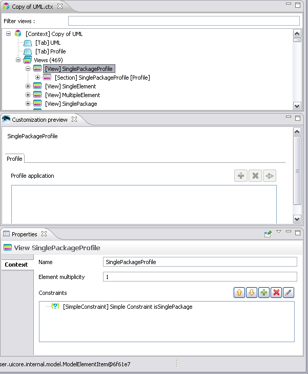
When more than one view match a selection, a priority mechanism will determine which one(s) should be displayed. The priorities are defined at the level of the view’s constraints, i.e. if the constraint for a View A overrides a constraint for the View B, the View B won’t be displayed. For example, a UML Class from a Class Diagram will match many views (The list is not exhaustive):
The priorities are computed in two ways:
When the “isOverrideable” property is set to false for a Constraint (In the property view model), only the static rules will be taken into account.
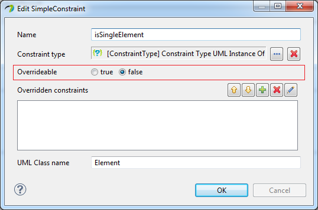
The automatic rules are the following:
Please note that each constraint has its own implementation of the overrides() method. See the advanced chapter for more information
The static rule is simple: when a Constraint explicitly overrides another constraint, it will always override it. This is especially useful when you’ve marked a constraint as “overrideable=false”, but still want to override it in a specific case (Remember that overrideable=false only applies to *automatic* constraint resolution).
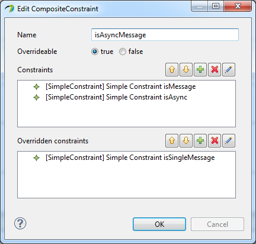
Finally, in the previous example, the following views will be displayed:
When you make a copy of a property view, it is not automatically activated. Thus, the modifications brought to the copy are not immediately visible on your property view. To activate a property view, you need to open the Papyrus preferences, from Window > Preferences.
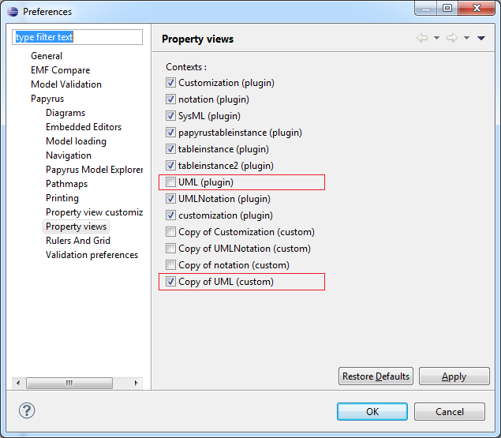
When making a copy of an existing configuration, you should uncheck the default one, and check the new one.
The customization tool only allows basic operations, such as adding, removing or reordering properties.
The property view framework is much more powerful, but this requires some Java development. This chapter will focus on the advanced customization of the property view.
To associate Java implementations with the property view model, you need to declare an Environment model. You can create a new Environment model with the “Environment Model” wizard in “Example EMF Model Creation Wizards” category. Select “Environment” as the Model Object.
Once you’ve added your Java class declarations, you should register the environment model so that the property view knows about it. Add an extension to org.eclipse.papyrus.properties.environment, and select your model file.
You can create new widgets for the property view. There are four kinds of graphical elements: CompositeWidget, Layout, StandardWidget and PropertyEditor. The widgets contain three common fields:
The PropertyEditor contains two additional fields:
To implement a Composite, Layout or Standard widget, you should simply follow the SWT rules, i.e. extend either Composite, Canvas or Layout, and have a (Composite, int) constructor. To define a PropertyEditor, you have two options:
Adding a Constraint is similar to creating a new Widget. You have two options to implement a new Constraint:
The important methods are the following (depending on whether you’re implement Constraint or extending AbstractConstraint):
The equivalent() and overrides() methods are used to automatically resolve constraints conflicts (Two different constraints matching the same element). Once the Constraint is implemented, don’t forget to register it in your environment model.
The ModelElement is the interface between the property view and your domain model. It is used to retrieve information about the object(s) being edited from the property. These informations will be used to configure the widget. AbstractModelElement provides a base implementation for this interface.
All methods from this interface take a single parameter, which is the name of the property being edited.
This method returns an IObservable which will be used to read and write a single property from the represented object. It should return an IObservableValue for single-valued properties, and IObservableList for multi-valued properties.
This method is only used for reference and enumerated properties. It should return a list of values which can be set to the edited property. Unlike IStructuredContentProvider, this provider will not rely on a StructuredViewer to retrieve an input object: the method getElement() will be called without any parameter, so the implementation should be able to retrieve its own typically. This will typically be achieved by passing a context object in the provider’s constructor.
This method is used to display an element’s label for a few widgets. Note that the same instance of label provider can be used by more than one Viewer for a given property. For example, the MultiReference widget will display three viewers, each using the same label provider. Each viewer will try to dispose the LabelProvider as soon as they are themselves disposed (For example, when closing the selection dialog from MultiReference). Thus, you should probably not implement the dispose() method, to avoid inconsistent providers.
This method returns an IValidator, if there’s one which is set up for the current property.
The ModelElements are associated to DataContextElements through a ModelElementFactory. The ModelElementFactory is defined on the DataContextRoot. All children of a DataContextRoot will share the same ModelElementFactory.
To add a new ModelElement, you should also create a new ModelElementFactory, and register it in your Environment model. Then, you can set this factory to your DataContextRoot.
Note: to display the Data contexts, you need to check the toggle button on top of the editor:
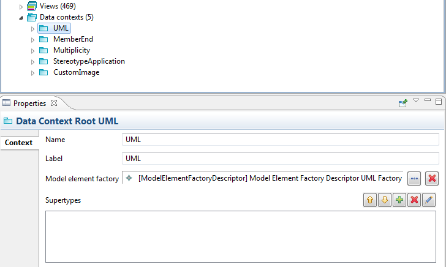
Note: The ContentProviders have been refactored in Papyrus 0.9, to be simplified. However, most of this chapter should remain true.
The ContentProvider is a complex features, which often evolves in the Papyrus property view. The ModelElement has been designed to be compatible with many kinds of different widgets (Combo-box, Tree-based dialogs…). The problem is that these widgets typically use different kinds of JFace ContentProvider (IStructuredContentProvider for flat display, ITreeContentProvider for Tree display). In the Property view, we needed to unify these providers.
Thus, it is recommended to use a IHierarchicContentProvider, which extends ITreeContentProvider, with an additional method: isValidValue(Object). In a Tree, we typically have two kinds of elements: the elements which can potentially be selected, and their containers, which often cannot. The isValidValue() method is used to distinguish between these values.
When a flat widget (e.g. ReferenceCombo) is used, only the valid values will be displayed. When a tree-based widget (e.g. ReferenceDialog) is used, a sub-tree will be displayed, excluding the sub-trees which don’t contain any valid value. Moreover, the invalid values won’t be selectable (For example, in the ReferenceDialog, the “ok” button will be grayed).
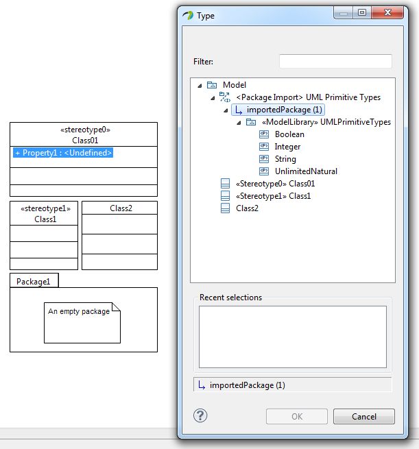
Sometimes, the property view should not depend on a selection, but on a specific property of the selected element. In such a case, it is frequent that this specific property might be edited by the property view itself. However, the property view is only refreshed when the selection changes.
To overcome this problem, Papyrus offers a “Dynamic section” feature, which allows refreshing dynamically one or more sections of the property view. For example, when you’re editing a View’s constraint in the Property view Editor, the constraint’s properties directly depend on the constraint’s type. When you select an UML constraint, the constraint’s parameter is the name of a UML Metaclass. When you select an EMF constraint, the constraint has two parameters: Namespace URI of the Metamodel, and the name of the Metaclass. Changing the constraint type should also change the constraint’s parameters editors.
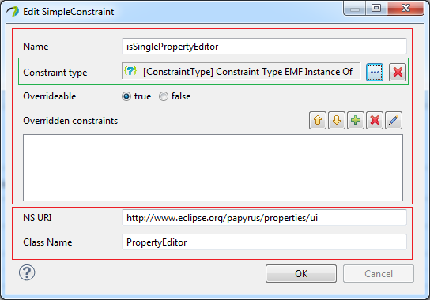
This can be achieved with dynamic sections, i.e. a section with a constraint. The constraint will be executed once at the beginning, and once again each time a property from the property view changes. If the constraint is matched, the section will be displayed. Otherwise, it will be hidden. A view with dynamic sections will typically look like the following:
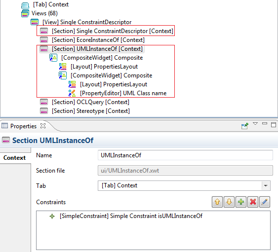
Please note that tabs cannot be added nor removed dynamically. For example, when you apply a stereotype on a UML Element, the tab associated to the stereotype’s property view cannot be displayed until you select the element again.
The Eclipse Tabbed Property View offers an extension point to define the label provider for the property view header. However, this label provider will be specific to the editor. For generic editors, it is not always possible to provide a pertinent label provider: they will always be too generic, and won’t be able to handle specific elements. For example, a generic EMF Model Editor with the customizable property view will only be able to display standard EMF labels and icons. To overcome this problem, Papyrus offers a configurable label provider for the header: org.eclipse.papyrus.properties.provider.SelectionLabelProvider
This label provider uses the selected element to find the most appropriate label provider, then dispatches the getText and getIcon calls to it. This label provider can be configured through an extension point: org.eclipse.papyrus.properties.labelprovider
This extension point takes an implementation of IFilteredLabelProvider and a priority. The IFilteredLabelProvider is a label provider with an additional method: boolean accept(IStructuredSelection). For each selection, the label provider accepting the selection, and having the highest priority will be used to display a header for it. It will then be possible to define a generic label provider for all java objects, with the lowest priority; another generic label provider for all EMF Objects, and a really specific label provider for a given metamodel (with the highest priority). In Papyrus, we have such an example for UML. The Papyrus UML Diagrams use the GMF model, which doesn’t have icons. We wanted to have a different icon for each type of Diagram: this is not possible with a standard EMF label provider, which associates an icon to an EClass, independently of its instances’ attributes.
So, we registered the standard EMF Label Provider with a medium priority, which can handle any kind of EObject, and a UML Label Provider, which can only handle UML Elements and GMF Diagrams, with a higher priority.
The lower the priority number, the higher the priority actually is:
If no label provider matches the selection, the default JFace LabelProvider is used.
View Properties support JFace Databinding, which connects our UI to our model. For the validation there are two kinds of validators:
If there are errors during the binding a control decoration is shown next to the widget. It also supports three level of severity (Ok, Warning, Error).
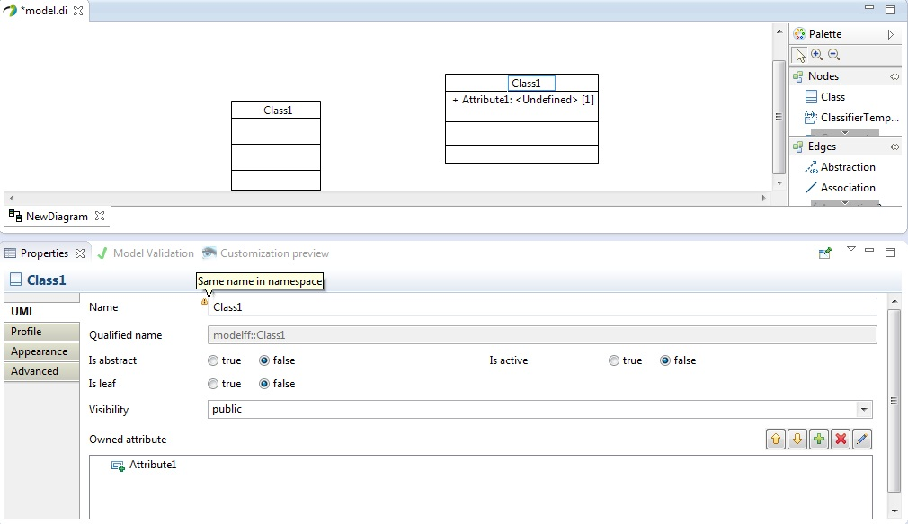
Properties views have fields’ coloration. If you modify a value the background of the field will be orange, when you validate a change the background will turn green for couple of seconds if the synchronization was successful, it will turn red otherwise.
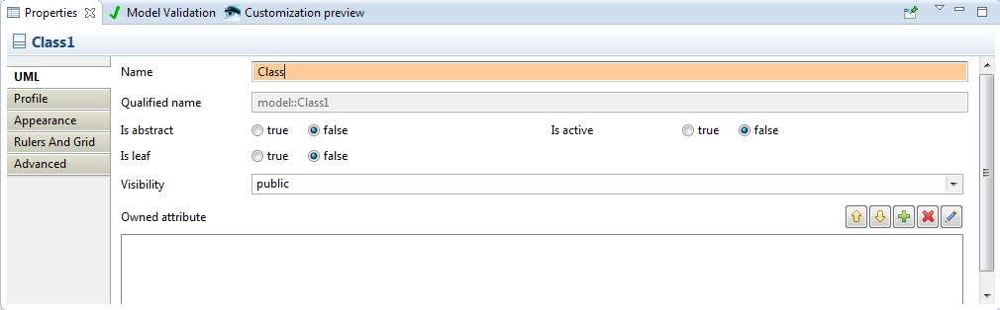
Editing an existing property view can be useful, but most of the time, you’ll want a brand new configuration for your own profile or meta-model. Thus, the framework provides a tool to automatically generate the initial property view, which you can then customize using the customization tool. The generator can create a property view configuration from either a UML Profile or an Ecore Meta-model. The wizard is available in the Papyrus category: File -> New -> Other… -> Papyrus/Property view configuration.
The wizard provides two default generators:
The source file must be located in your workspace. A default target file named will be filled with the .ctx extension (This is the extension for a property view configuration).
Press next: a combo asks you which strategy to use.
A basic method: all the elements from the profile or meta-model will be extracted, with no dependencies to other models.
Same CTX file: you are asked to choose which models you want to extract, and will be saved in the same file
Different CTX file(s): you are asked to choose which models you want to extract and they will be saved in different files, (each profile name will be the name of the generated ctx file)
Press next: a table with all the elements extracted from your profile or meta-model is displayed. This table contains four columns:
Press finish: two files or more files according to the chosen strategy and a folder are generated:
You can now open the *.ctx file and customize your property view.
Papyrus provides a simple tool to deploy a property view locally (Right click on a CTX file -> Deploy/Undeploy)